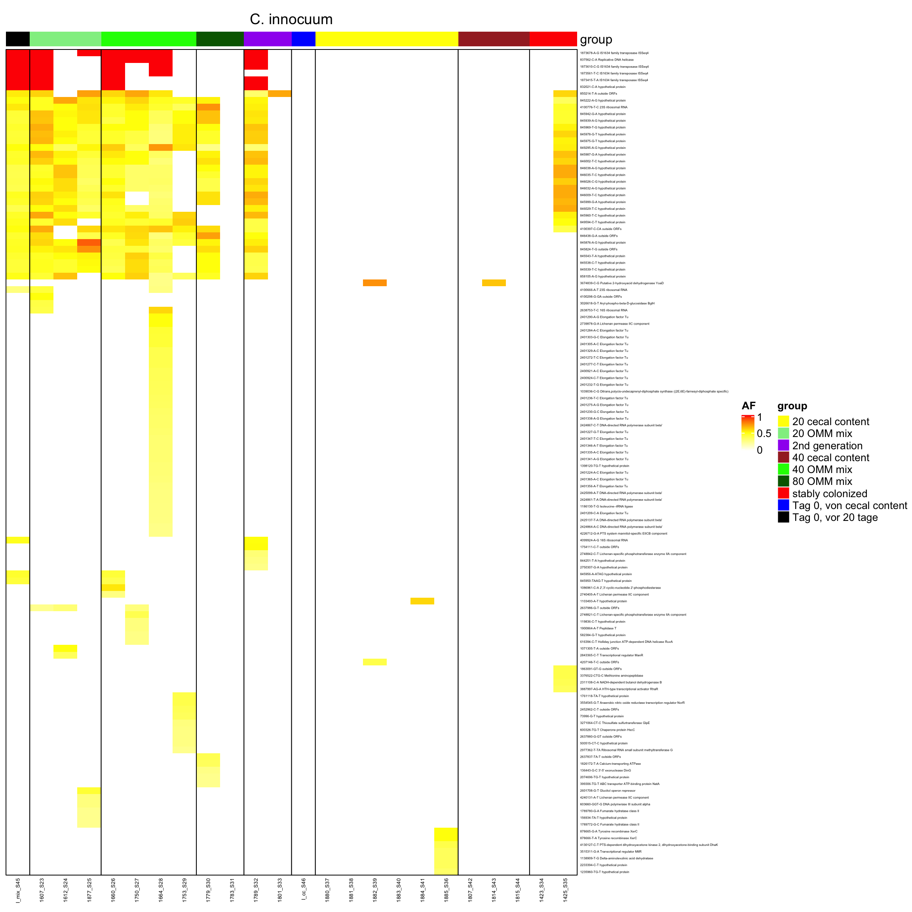

Section 4 AB Samples
4.1 Load in variants
vcfToDataframe <- function(vcf.files, contig_mapping = contig_mapping, gff.df = gff.df) {
require(vcfR)
res <- list()
for (file in vcf.files) {
message(file)
library(data.table)
vcf.content <- vcfR::read.vcfR(file, verbose = FALSE)
vcf.fix <- as.data.frame(vcf.content@fix) # contains chr, position and substitution informations
vcf.info <- vcfR::INFO2df(vcf.content) # get INFO field, contains DP, AF informations
if (nrow(vcf.fix) > 0) {
# there are variants
dat <- as.data.frame(cbind(vcf.fix[, c(1, 2, 4, 5, 6)], vcf.info[, c(1, 2)]))
dat$majorAF <- sapply(dat$AF, minorAfToMajorAf) # transforms e.g. AF of 0.1 to 0.9, 0.9 stays 0.9 and 0.5 stays 0.5
dat$genome <- contig_mapping[match(dat$CHROM, contig_mapping$contig), ]$genome # map chr information to genome name e.g. NHMU01000001.1 -> i48
dat$genome_hr <- translateGenomeIdToFullName(tolower(dat$genome))
dat$mouse.id <- substr(tools::file_path_sans_ext(basename(file)), 1, 4)
dat$mouse.group <- translateMouseIdToTreatmentGroup(dat$mouse.id)
dat$dp <- as.numeric(as.matrix(vcf.info$DP))
# annotate overlay of gene dt.vcf <- data.table(start = as.integer(as.matrix(dat$POS)), end = as.integer(as.matrix(dat$POS)), chr = as.character(as.matrix(dat$CHROM))) # where variants are
dt.gff <- data.table(start = gff.df$start, end = gff.df$end, chr = as.character(as.matrix(gff.df$chr)), feature = gff.df$product)
colnames(dat)[1:2] <- c("chr", "start")
dat$start <- as.integer(as.matrix(dat$start))
dat$chr <- as.character(as.matrix(dat$chr))
dat$end <- dat$start
dat2 <- as.data.table(dat)
setkey(dt.gff, chr, start, end)
annotated <- foverlaps(dat2, dt.gff, type = "within", mult = "first")
res[[tools::file_path_sans_ext(basename(file))]] <- annotated # add vcf df to list
} else {
message("Skipping")
}
}
df <- as.data.frame(do.call(rbind, res)) # merge list to df
return(df)
}# load in reference information
gff.files <- Sys.glob("data/references/gff/*.gff")
gff.df <- NULL
for (gff.file in gff.files) {
message(gff.file)
gff <- rtracklayer::readGFF(gff.file)
# subset since different columns are present on gff files
relevant <- data.frame(start = gff$start, end = gff$end, type = as.character(as.matrix(gff$type)), gene = as.character(as.matrix(gff$gene)), product = as.character(as.matrix(gff$product)), chr = as.character(as.matrix(gff$seqid)))
relevant$genome <- substr(basename(gff.file), 1, nchar(basename(gff.file)) - 4)
gff.df <- rbind(gff.df, relevant)
}## data/references/gff/I46.gff## data/references/gff/KB1.gff## data/references/gff/YL58.gff# load in contig information
contig_mapping <- read.csv2("data/contig_mapping_new_ref.csv", sep = ";", header = T, stringsAsFactors = F) # this file contains contig names of the 12 OligoMM genomes
# load in vcf files
vcf.files <- Sys.glob("out_philipp/all_vcf/*.vcf")
vcf.samples <- suppressWarnings(vcfToDataframe(vcf.files, contig_mapping, gff.df = gff.df))## out_philipp/all_vcf/1681d00_S56.vcf## out_philipp/all_vcf/1681d14_S57.vcf## out_philipp/all_vcf/1681d30_S58.vcf## out_philipp/all_vcf/1681d49_S59.vcf## out_philipp/all_vcf/1681d63_S60.vcf## out_philipp/all_vcf/1681d79_S61.vcf## out_philipp/all_vcf/1683d00_S47.vcf## out_philipp/all_vcf/1683d04_S48.vcf## out_philipp/all_vcf/1683d09_S49.vcf## Skipping## out_philipp/all_vcf/1683d14_S50.vcf## out_philipp/all_vcf/1683d18_S51.vcf## out_philipp/all_vcf/1683d23_S52.vcf## out_philipp/all_vcf/1683d30_S53.vcf## out_philipp/all_vcf/1683d44_S55.vcf## out_philipp/all_vcf/1683d49_S56.vcf## out_philipp/all_vcf/1683d53_S57.vcf## out_philipp/all_vcf/1683d58_S58.vcf## out_philipp/all_vcf/1683d63_S59.vcf## out_philipp/all_vcf/1683d67_S60.vcf## out_philipp/all_vcf/1683d72_S61.vcf## out_philipp/all_vcf/1683d79_S62.vcf## out_philipp/all_vcf/1684d00_S62.vcf## out_philipp/all_vcf/1684d14_S63.vcf## out_philipp/all_vcf/1684d30_S64.vcf## out_philipp/all_vcf/1684d49_S65.vcf## out_philipp/all_vcf/1684d63_S66.vcf## out_philipp/all_vcf/1684d79_S67.vcf## out_philipp/all_vcf/1686d00_S69.vcf## out_philipp/all_vcf/1686d14_S70.vcf## out_philipp/all_vcf/1686d30_S71.vcf## out_philipp/all_vcf/1686d49_S72.vcf## out_philipp/all_vcf/1686d63_S73.vcf## out_philipp/all_vcf/1686d79_S74.vcf## out_philipp/all_vcf/1688d00_S1.vcf## out_philipp/all_vcf/1688d04_S2.vcf## out_philipp/all_vcf/1688d09_S3.vcf## out_philipp/all_vcf/1688d14_S4.vcf## out_philipp/all_vcf/1688d18_S5.vcf## out_philipp/all_vcf/1688d23_S6.vcf## out_philipp/all_vcf/1688d30_S7.vcf## out_philipp/all_vcf/1688d37_S8.vcf## out_philipp/all_vcf/1688d44_S9.vcf## out_philipp/all_vcf/1688d49_S10.vcf## out_philipp/all_vcf/1688d53_S11.vcf## out_philipp/all_vcf/1688d58_S12.vcf## out_philipp/all_vcf/1688d63_S13.vcf## out_philipp/all_vcf/1688d67_S14.vcf## out_philipp/all_vcf/1688d72_S15.vcf## out_philipp/all_vcf/1688d79_S16.vcf## out_philipp/all_vcf/1690d00_S75.vcf## out_philipp/all_vcf/1690d14_S76.vcf## out_philipp/all_vcf/1690d30_S77.vcf## out_philipp/all_vcf/1690d49_S78.vcf## out_philipp/all_vcf/1690d63_S79.vcf## out_philipp/all_vcf/1690d79_S80.vcf## out_philipp/all_vcf/1692d00_S17.vcf## out_philipp/all_vcf/1692d04_S18.vcf## out_philipp/all_vcf/1692d09_S19.vcf## out_philipp/all_vcf/1692d14_S20.vcf## out_philipp/all_vcf/1692d18_S21.vcf## out_philipp/all_vcf/1692d23_S22.vcf## out_philipp/all_vcf/1692d30_S23.vcf## out_philipp/all_vcf/1692d37_S24.vcf## out_philipp/all_vcf/1692d44_S25.vcf## out_philipp/all_vcf/1692d49_S26.vcf## out_philipp/all_vcf/1692d53_S27.vcf## out_philipp/all_vcf/1692d58_S28.vcf## out_philipp/all_vcf/1692d63_S29.vcf## out_philipp/all_vcf/1692d67_S30.vcf## out_philipp/all_vcf/1692d72_S31.vcf## out_philipp/all_vcf/1692d79_S32.vcf## out_philipp/all_vcf/1693d00_S81.vcf## out_philipp/all_vcf/1693d14_S82.vcf## out_philipp/all_vcf/1693d30_S83.vcf## out_philipp/all_vcf/1693d49_S84.vcf## out_philipp/all_vcf/1693d63_S85.vcf## out_philipp/all_vcf/1693d79_S86.vcf## out_philipp/all_vcf/1694d00_S87.vcf## out_philipp/all_vcf/1694d14_S88.vcf## out_philipp/all_vcf/1694d30_S89.vcf## out_philipp/all_vcf/1694d49_S90.vcf## out_philipp/all_vcf/1694d63_S91.vcf## out_philipp/all_vcf/1694d79_S43.vcf## out_philipp/all_vcf/1697d00_S50.vcf## out_philipp/all_vcf/1697d14_S51.vcf## out_philipp/all_vcf/1697d30_S52.vcf## out_philipp/all_vcf/1697d49_S53.vcf## out_philipp/all_vcf/1697d63_S54.vcf## out_philipp/all_vcf/1697d79_S55.vcf## out_philipp/all_vcf/1698d00_S44.vcf## out_philipp/all_vcf/1698d14_S45.vcf## out_philipp/all_vcf/1698d30_S46.vcf## out_philipp/all_vcf/1698d49_S47.vcf## out_philipp/all_vcf/1698d63_S48.vcf## out_philipp/all_vcf/1698d79_S49.vcf## out_philipp/all_vcf/1699d00_S33.vcf## out_philipp/all_vcf/1699d04_S34.vcf## out_philipp/all_vcf/1699d09_S35.vcf## out_philipp/all_vcf/1699d14_S36.vcf## out_philipp/all_vcf/1699d18_S37.vcf## out_philipp/all_vcf/1699d23_S38.vcf## out_philipp/all_vcf/1699d30_S39.vcf## out_philipp/all_vcf/1699d37_S40.vcf## out_philipp/all_vcf/1699d44_S41.vcf## out_philipp/all_vcf/1699d49_S42.vcf## out_philipp/all_vcf/1699d53_S63.vcf## out_philipp/all_vcf/1699d58_S64.vcf## out_philipp/all_vcf/1699d63_S65.vcf## out_philipp/all_vcf/1699d67_S66.vcf## out_philipp/all_vcf/1699d72_S67.vcf## out_philipp/all_vcf/1699d79_S68.vcfvcf.samples$feature <- as.character(as.matrix(vcf.samples$feature))
vcf.samples[which(is.na(vcf.samples$feature)), ]$feature <- "outside ORFs"
vcf.samples[which(vcf.samples$feature == "hypothetical protein"), ]$feature <- "hypothetical proteins"
saveRDS(vcf.samples, file = "data/rds/omm_ab.rds")p <- ggplot(vcf.samples, aes(AF, fill = genome)) + geom_histogram()
p <- p + facet_grid(mouse.id + mouse.group ~ genome + genome_hr)
p <- p + theme_classic() + xlab("AF") + ylab("occurence")
print(p)## `stat_bin()` using `bins = 30`. Pick better value with `binwidth`.

Figure 4.1: AF of resequenced strains
p <- ggplot(vcf.samples, aes(majorAF, fill = genome)) + geom_histogram()
p <- p + facet_grid(mouse.id + mouse.group ~ genome + genome_hr)
p <- p + theme_classic() + xlab("AF") + ylab("occurence")
print(p)## `stat_bin()` using `bins = 30`. Pick better value with `binwidth`.
Figure 4.2: major AF of resequenced strains